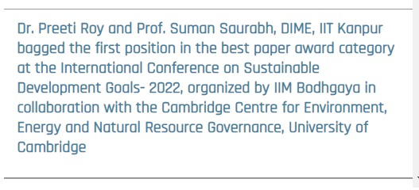

Awards
| Sep, 2022 |
First Position in Best Paper Award
for paper titled
"Does the ESG disclosure during uncertain environment offers substantial opportunities
in Indian stock market?" (co-authored with Prof. Suman Saurabh) at the International
Conference on Sustainable Development Goals- 2022, organized by IIM Bodhgaya in
collaboration with the Cambridge
Centre for Environment, Energy and Natural Resource Governance, University of Cambridge.
The two-day Conference provided a platform for research scholars to collaborate, exchange ideas, and present research papers. Ms. Preeti Roy and Dr. Suman Saurabh, Department of Industrial and Management Engineering, IIT Kanpur; Mr. Naveenan R.V., Ms. Srinidhi Gadeela and Mr. Abhishek Amar, Symbiosis Institute of Business Management, Symbiosis International University; and Ms. Kavita Kamboj, Shri Ram College of Commerce (SRCC), University of Delhi and Mr. Nawal Kishor, Indira Gandhi National Open University were awarded the first, second and third ‘Best Paper' awards respectively.
Dr. Preeti Roy and Prof. Suman Saurabh, DIME, IIT Kanpur bagged the first position in the best paper award category at the International Conference on Sustainable Development Goals- 2022, organized by IIM Bodhgaya in collaboration with the Cambridge Centre for Environment, Energy and Natural Resource Governance, University of Cambridge.

|
| March, 2022 |
Certificate of Excellence Award
for the paper titled "Signs of Financial Distress at Jet Airways – The way
forward" (co-authored with Prof. Suman Saurabh) AIMA Case Writing Competition 2022,
24th-25th March, 2022, AIMA, New Delhi, India.
Attach Scanned Certificate
A case study titled 'Signs of Financial Distress at Jet Airways - The Way Forward', written by Prof. Suman Saurabh and Dr. Preeti Roy has been published at AIMA India Case Research Centre. 
|
| Dec, 2020 |
Best Paper Award
in Finance Track for the paper titled "Systemic Risk in Select Indian Banks:
Evidence from Aggregated and Dis- aggregated Analysis" (co-authored with Prof. Saif
Siddiqui) 6th International Management Conference on Advances in Management
through Research, Innovation and Technology, Organized by Fortune Institute of
International Business, 2020, 16- 18th December, 2020, New Delhi, India.
Attach Scanned Certificate |
| Nov-Dec, 2018 |
Emerald Best Paper Award
for the paper titled "Examining Asymmetric Relationship between India VIX,
Nifty 50 Returns and Trading Volume: A case of Quantile Regression" (co-authored with
Prof. Saif Siddiqui) First PAN IIT International Management Conference 2018, November
30- December 2, 2018, IIT Roorkee, Uttarakhand, India.
Attach Scanned Certificate |

Academic Achievements
| Jan, 2017 | Qualified UGC NET exam, awarded Junior Research Fellowship in Commerce. |
| 2016-17 |
Awarded with Certificate of Merit for securing first
position in M.Com.
Attach Scanned Certificate |
| 2013-14 |
Awarded with Dr. Usha Aggarwal Trust Scholarship
for securing second position in B.Com (H).
Attach Scanned Certificate |
| 2012-13 |
Awarded with Dr. B. P. Maheshwari Memorial Award
for securing third position in B.Com (H).
Attach Scanned Certificate |
| 2009-10 & 2010-2011 |
Awarded with Sarla Chopra Merit Scholarship in
School level.
Attach Scanned Certificate |